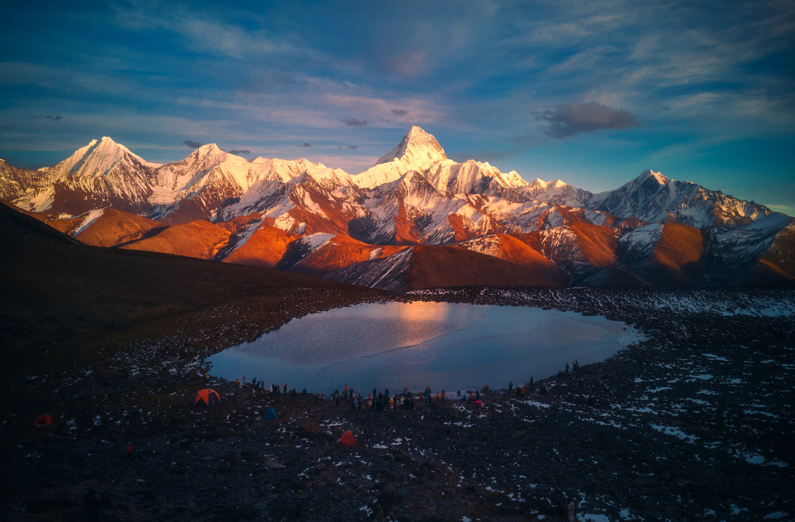

摄影圣殿 · 海拔4500m
冷嘎措·贡嘎双金山倒影
湖畔直面 7556 米蜀山之王庞大的冰川主峰。晴朗无风的黄昏，湖面宛如一面深蓝明镜，金光四射的贡嘎雪山与湖中倒影交相辉映，中国风光摄影的无上皇冠机位。
📸 拍摄时机： 10月中下旬至11月降水最少、风浪最小。必须携带三脚架与减光镜；靠近湖边找一处风浪死角小水洼进行低角度对称构图。

湖畔直面 7556 米蜀山之王庞大的冰川主峰。晴朗无风的黄昏，湖面宛如一面深蓝明镜，金光四射的贡嘎雪山与湖中倒影交相辉映，中国风光摄影的无上皇冠机位。
 直面贡嘎 · 海拔4550m
直面贡嘎 · 海拔4550m
越野车可直接开上垭口公路边缘，下车即直面近在咫尺、垂直拔起千米的贡嘎巨壁。脚下是翻滚汹涌的浩瀚云海，视觉震撼压迫感无与伦比。